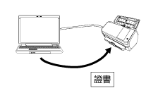

概觀
Network Setup Tool for fi Series 應用程式可用來將 fi Series 影像 掃描器連線至網路以使用掃描器。
Network Setup Tool for fi Series 附帶以下工具。
工具可支援的掃描器機型依據使用機型而定。預先確認各工具可支援您所使用的掃描器機型名稱。關於各工具可支援掃描器機型的詳細資訊，請參閱 支援的掃描器機型。
掃描器選擇工具
此工具可用來由電腦中選擇您要用的掃描器。
您可由連線至網路的掃描器中選擇單一掃描器。
選擇 fi-8950、fi-8930、fi-8820、fi-8040、fi-8190、fi-8290、fi-8170、fi-8270、fi-8150 或 fi-8250 時，您也可執行以下操作。
由 [掃描器選擇工具] 視窗 (在網路瀏覽器上) 啟動 fi Series 網路設定以指定掃描器設定
由您的電腦啟動 Software Operation Panel 以指定掃描器設定
關於 (網頁瀏覽器上的) fi Series 網路設定和 Software Operation Panel 的詳細資訊，請參閱掃描器的操作指南。

IP 位址設定工具
此工具可設定 IP 位址、掃描器名稱、安全性相關資訊及其他網路資訊。
憑證登錄工具
此工具可在掃描器上登錄憑證以透過 Wi-Fi 將掃描器連線至需要憑證的網路。
在掃描器上登錄憑證後，請在掃描器觸控螢幕上指定 Wi-Fi 設定。
可登錄的憑證如下：
客戶憑證：PKCS#12 格式檔案 (*.p12、*.pfx)
CA 憑證：CA 憑證檔案 (*.cer、*.crt、*.der、*.pem)

Button Event Manager
此工具可指定在按下掃描器上的按鈕時所啟動的影像掃描應用程式。
您必須使用掃描器選擇工具來設定連線至網路的掃描器，才能在電腦上使用之。